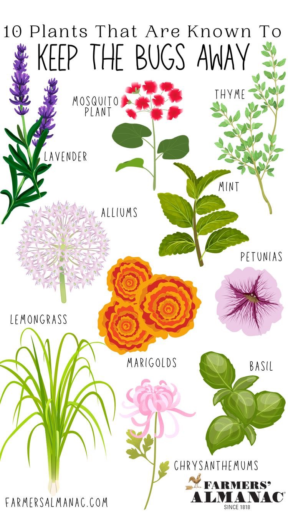

Dimineata au mai aparut mici plantute de la ridichi.
Am udat toate ghivecelele si am pus mai mult la ridichi, pentru ca am sesizat ca trag mai multa apa, pamantul era cam uscat la suprafata.
Idee: am gasit pe net niste plante care, daca sunt plantate intre rasaduri, reduc riscul sau chiar il elimina de a avea insecte/gandacei (lavanda, menta, petunie, crizantema, cimbru, busuioc, alliums-ceapa decorativa, mosquito plant-busuiocul cerbilor, lemongrass-citronela/iarba de lamaie, marigolds-vazdoaga/tagetes).
